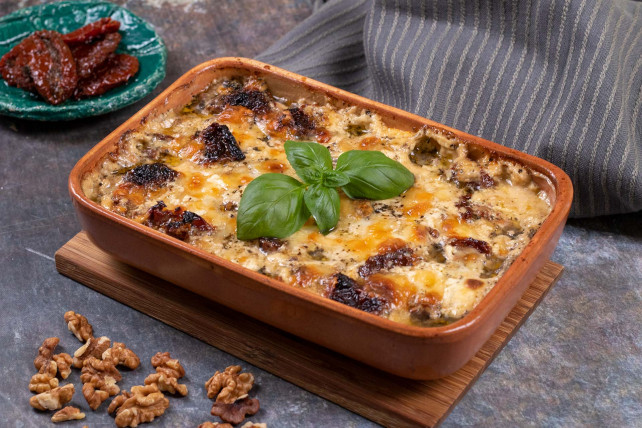
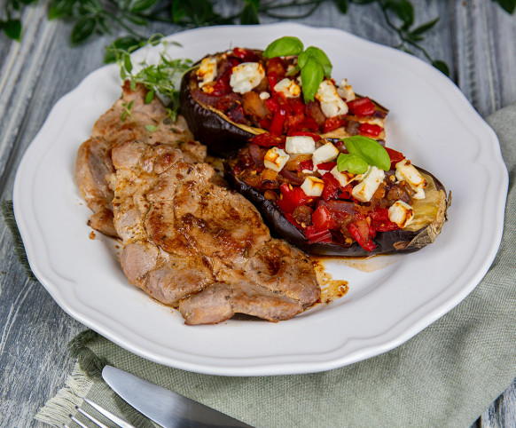

Étlap

Diós-sajtos-tepsis-csirkemell
3000 Ft.
Fűszeres saslik petrezselymes burgonyával
3000 Ft.
Gluténmentes sonkás rakott tészta
3500 Ft.

Sült tarja zöldseggel töltott padlizsannal
3200 Ft.
Sült cirkemell mustáros pácban, sült görög dinnyével és sült ananásszal
3500 Ft.